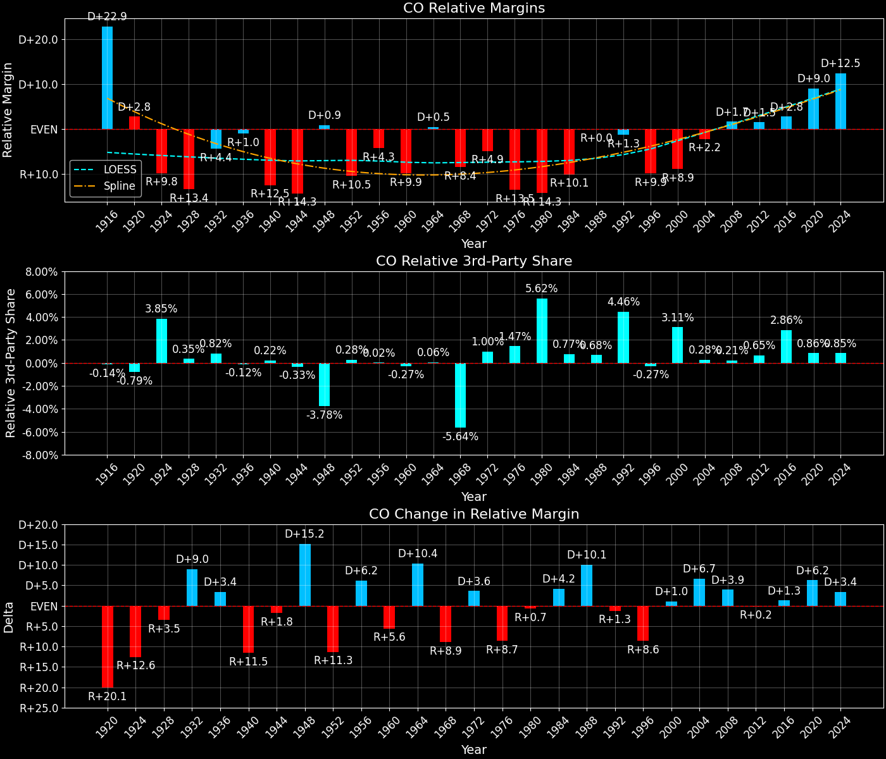

← Back to Map
Margins · 3rd-Party share · Pres. deltas

Relative margins · Relative 3rd-Party · Rel. deltas
Colorado (CO) — Total Data
| Year | EVs | D | R | State Margin | Nat. Margin | Rel. Margin | Total votes |
|---|
| 1968 | 6 | 335,174(41.6%) | 409,375(50.8%) | R+9.2 | R+0.6 | R+8.6 | 805,362 |
| 1972 | 7 | 330,071(35.6%) | 597,590(64.4%) | R+28.8(Δ R+19.6) | R+23.5(Δ R+23.0) | R+5.3(Δ D+3.3) | 927,661 |
| 1976 | 7 | 454,419(44.2%) | 574,577(55.8%) | R+11.7(Δ D+17.2) | D+2.2(Δ D+25.7) | R+13.9(Δ R+8.6) | 1,028,996 |
| 1980 | 7 | 365,888(32.0%) | 646,293(56.6%) | R+24.6(Δ R+12.9) | R+9.9(Δ R+12.1) | R+14.7(Δ R+0.8) | 1,142,124 |
| 1984 | 8 | 444,564(35.8%) | 797,340(64.2%) | R+28.4(Δ R+3.9) | R+18.1(Δ R+8.2) | R+10.3(Δ D+4.4) | 1,241,904 |
| 1988 | 8 | 621,453(46.0%) | 728,177(54.0%) | R+7.9(Δ D+20.5) | R+7.7(Δ D+10.4) | R+0.2(Δ D+10.1) | 1,349,630 |
| 1992 | 8 | 629,681(40.4%) | 562,850(36.1%) | D+4.3(Δ D+12.2) | D+5.6(Δ D+13.3) | R+1.3(Δ R+1.1) | 1,558,541 |
| 1996 | 8 | 671,150(44.5%) | 691,846(45.9%) | R+1.4(Δ R+5.7) | D+8.6(Δ D+3.0) | R+9.9(Δ R+8.6) | 1,508,270 |
| 2000 | 8 | 738,229(42.4%) | 883,753(50.8%) | R+8.4(Δ R+7.0) | D+0.5(Δ R+8.0) | R+8.9(Δ D+1.0) | 1,740,179 |
| 2004 | 9 | 1,001,710(47.2%) | 1,101,157(51.9%) | R+4.7(Δ D+3.7) | R+2.5(Δ R+3.0) | R+2.2(Δ D+6.7) | 2,121,034 |
| 2008 | 9 | 1,288,577(53.7%) | 1,073,591(44.7%) | D+9.0(Δ D+13.6) | D+7.3(Δ D+9.7) | D+1.7(Δ D+3.9) | 2,401,365 |
| 2012 | 9 | 1,323,102(51.5%) | 1,185,243(46.1%) | D+5.4(Δ R+3.6) | D+3.9(Δ R+3.4) | D+1.5(Δ R+0.2) | 2,569,518 |
| 2016 | 9 | 1,338,799(48.2%) | 1,202,384(43.3%) | D+4.9(Δ R+0.5) | D+2.1(Δ R+1.8) | D+2.8(Δ D+1.3) | 2,780,046 |
| 2020 | 9 | 1,806,939(55.4%) | 1,368,065(41.9%) | D+13.5(Δ D+8.5) | D+4.4(Δ D+2.3) | D+9.0(Δ D+6.2) | 3,261,446 |
| 2024 | 10 | 1,728,159(54.1%) | 1,377,441(43.1%) | D+11.0(Δ R+2.5) | R+1.5(Δ R+6.0) | D+12.5(Δ D+3.5) | 3,192,745 |
Column explanations
- Δ
- Change (delta) in the value from the previous election year.
- Year
- Election year.
- EVs
- Number of electoral votes allocated to this state or unit.
- D
- Number of votes for the Democratic candidate (raw count(pct%)).
- R
- Number of votes for the Republican candidate (raw count(pct%)).
- State Margin
- Margin between the two major-party candidates, including third-party votes ((D - R)/total).
- Nat. Margin
- The national presidential margin for that year, including third-party votes ((D_total - R_total)/total_votes).
- Rel. Margin
- The presidential margin relative to the national presidential margin (Margin - Nat. Margin).
- Total votes
- Total voter turnout or ballots cast (when provided).
Colorado (CO) — Third-Party Data
| Year | D | R | Other votes | State 3rd-Party Share | 3rd-Party Nat. Share | 3rd-Party Rel. Share |
|---|
| 1968 | 335,174(41.6%) | 409,375(50.8%) | 60,813(7.6%) | 7.55% | 13.59% | -6.03% |
| 1972 | 330,071(35.6%) | 597,590(64.4%) | 0(0.0%) | 0.00% | 0.09% | -0.09% |
| 1976 | 454,419(44.2%) | 574,577(55.8%) | 0(0.0%) | 0.00% | 0.33% | -0.33% |
| 1980 | 365,888(32.0%) | 646,293(56.6%) | 129,943(11.4%) | 11.38% | 6.98% | 4.40% |
| 1984 | 444,564(35.8%) | 797,340(64.2%) | 0(0.0%) | 0.00% | 0.12% | -0.12% |
| 1988 | 621,453(46.0%) | 728,177(54.0%) | 0(0.0%) | 0.00% | 0.21% | -0.21% |
| 1992 | 629,681(40.4%) | 562,850(36.1%) | 366,010(23.5%) | 23.48% | 19.23% | 4.25% |
| 1996 | 671,150(44.5%) | 691,846(45.9%) | 145,274(9.6%) | 9.63% | 9.68% | -0.05% |
| 2000 | 738,229(42.4%) | 883,753(50.8%) | 118,197(6.8%) | 6.79% | 3.65% | 3.14% |
| 2004 | 1,001,710(47.2%) | 1,101,157(51.9%) | 18,167(0.9%) | 0.86% | 0.84% | 0.02% |
| 2008 | 1,288,577(53.7%) | 1,073,591(44.7%) | 39,197(1.6%) | 1.63% | 1.38% | 0.25% |
| 2012 | 1,323,102(51.5%) | 1,185,243(46.1%) | 61,173(2.4%) | 2.38% | 1.62% | 0.76% |
| 2016 | 1,338,799(48.2%) | 1,202,384(43.3%) | 238,863(8.6%) | 8.59% | 5.54% | 3.06% |
| 2020 | 1,806,939(55.4%) | 1,368,065(41.9%) | 86,442(2.7%) | 2.65% | 1.84% | 0.81% |
| 2024 | 1,728,159(54.1%) | 1,377,441(43.1%) | 87,145(2.7%) | 2.73% | 1.88% | 0.85% |
Column explanations
- Year
- Election year.
- D
- Number of votes for the Democratic candidate (raw count(pct%)).
- R
- Number of votes for the Republican candidate (raw count(pct%)).
- Other votes
- Number of votes for third-party (other) candidates (raw count(pct%)).
- State 3rd-Party Share
- Share of the vote received by third-party (other) candidates.
- 3rd-Party Nat. Share
- The national third-party share for that year (3rd-Party votes / total votes).
- 3rd-Party Rel. Share
- Third-party share relative to the national third-party share (3rd-Party share - Nat. 3rd-Party share).
Two-party margins · relative · deltas
Colorado (CO) — Two-Party Data
| Year | EVs | D | R | 2-Party Margin | 2-Party Nat. Margin | 2-Party Rel. Margin |
|---|
| 1968 | 6 | 335,174(45.0%) | 409,375(55.0%) | R+10.0 | R+0.7 | R+9.3 |
| 1972 | 7 | 330,071(35.6%) | 597,590(64.4%) | R+28.8(Δ R+18.9) | R+23.6(Δ R+22.9) | R+5.3(Δ D+4.0) |
| 1976 | 7 | 454,419(44.2%) | 574,577(55.8%) | R+11.7(Δ D+17.2) | D+2.2(Δ D+25.8) | R+13.9(Δ R+8.6) |
| 1980 | 7 | 365,888(36.1%) | 646,293(63.9%) | R+27.7(Δ R+16.0) | R+10.6(Δ R+12.8) | R+17.1(Δ R+3.2) |
| 1984 | 8 | 444,564(35.8%) | 797,340(64.2%) | R+28.4(Δ R+0.7) | R+18.1(Δ R+7.5) | R+10.3(Δ D+6.8) |
| 1988 | 8 | 621,453(46.0%) | 728,177(54.0%) | R+7.9(Δ D+20.5) | R+7.8(Δ D+10.4) | R+0.1(Δ D+10.1) |
| 1992 | 8 | 629,681(52.8%) | 562,850(47.2%) | D+5.6(Δ D+13.5) | D+6.9(Δ D+14.7) | R+1.3(Δ R+1.2) |
| 1996 | 8 | 671,150(49.2%) | 691,846(50.8%) | R+1.5(Δ R+7.1) | D+9.5(Δ D+2.6) | R+11.0(Δ R+9.7) |
| 2000 | 8 | 738,229(45.5%) | 883,753(54.5%) | R+9.0(Δ R+7.5) | D+0.5(Δ R+8.9) | R+9.5(Δ D+1.5) |
| 2004 | 9 | 1,001,710(47.6%) | 1,101,157(52.4%) | R+4.7(Δ D+4.2) | R+2.5(Δ R+3.0) | R+2.2(Δ D+7.3) |
| 2008 | 9 | 1,288,577(54.6%) | 1,073,591(45.4%) | D+9.1(Δ D+13.8) | D+7.4(Δ D+9.8) | D+1.7(Δ D+4.0) |
| 2012 | 9 | 1,323,102(52.7%) | 1,185,243(47.3%) | D+5.5(Δ R+3.6) | D+3.9(Δ R+3.4) | D+1.6(Δ R+0.2) |
| 2016 | 9 | 1,338,799(52.7%) | 1,202,384(47.3%) | D+5.4(Δ R+0.1) | D+2.2(Δ R+1.7) | D+3.1(Δ D+1.6) |
| 2020 | 9 | 1,806,939(56.9%) | 1,368,065(43.1%) | D+13.8(Δ D+8.5) | D+4.5(Δ D+2.3) | D+9.3(Δ D+6.2) |
| 2024 | 10 | 1,728,159(55.6%) | 1,377,441(44.4%) | D+11.3(Δ R+2.5) | R+1.6(Δ R+6.1) | D+12.9(Δ D+3.6) |
Column explanations
- Δ
- Change (delta) in the value from the previous election year.
- Year
- Election year.
- EVs
- Number of electoral votes allocated to this state or unit.
- D
- Number of votes for the Democratic candidate (raw count(pct%)).
- R
- Number of votes for the Republican candidate (raw count(pct%)).
- 2-Party Margin
- Margin between the two major-party candidates, ignoring third-party votes ((D - R)/(D + R)).
- 2-Party Nat. Margin
- The national presidential margin for that year, including third-party votes ((D_total - R_total)/total_votes).
- 2-Party Rel. Margin
- The presidential margin relative to the national presidential margin (Margin - Nat. Margin).